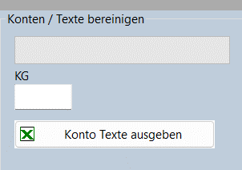
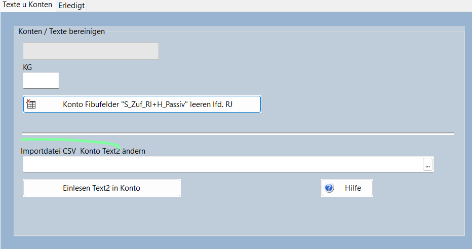

Die Eingabe für diesen Lauf ist die Ausgabe aus folgender Procedure:
Im Sparkontenprogramm bei den Druckausgaben die Seite Sonderauswertungen öffnen.

Die gewünschte KG eintragen und los.
Die Excel Datei dem Kunden zur Verfügung stellen.
Wenn die Datei korrigiert zurück ist, ist folgendes zu tun:
Aus der Excel-Datei ist eine Utf8 CSV Datei zu machen (einfach mit speichern unter)
Dann kann das Programm Tools aufgerufen werden.

Da das Einleseprogramm als Delimiter nur Kommas akzeptiert, besteht das einlesen aus 2 Steps. Die Datei wird gelesen und während des Lesens werden die von Excel erzeugten Semikolons in Kommas umgewandelt. Gleichzeitigt wird eine neu Eingabedatei erzeugt, die im Step2 eingelesen wird. Hierbei werden die Konten gesucht und upgedated.